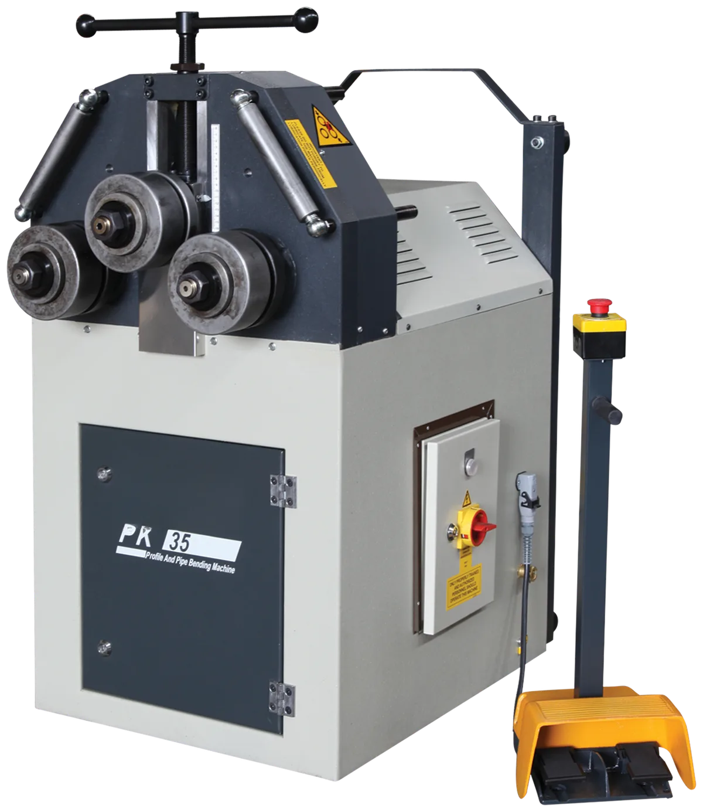
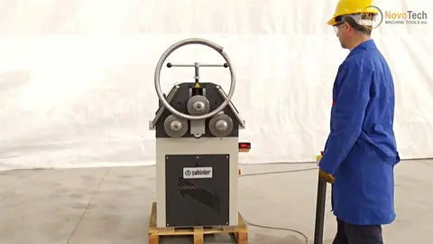
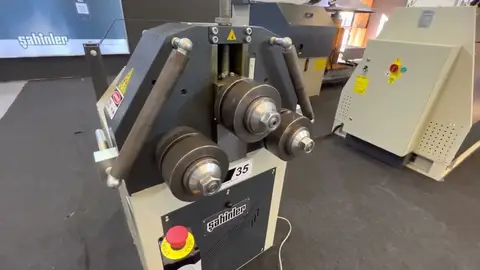
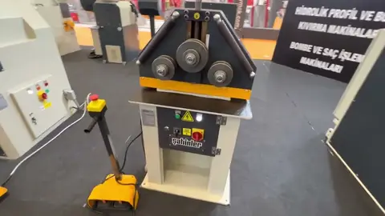
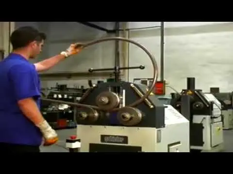
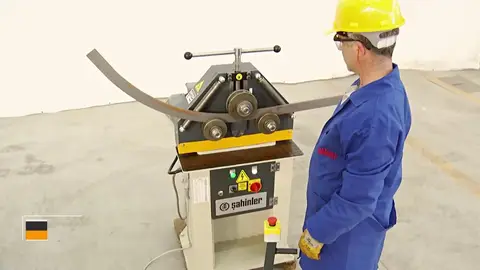
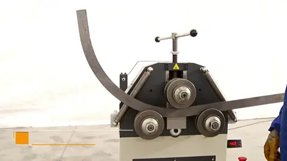

PK 30 · PK 35 motorized section and pipe benders
PK 30 · PK 35 · Ø1.18″ and 1.97″ shafts

1 / 3
PK 35 angle roll — 2″ tube

PK 35 ring roll — pipe roller

PK 30 ring roller

PK 35 tube roll bender

PK 30 roll bender — angle roll — ring roller — profile bending roll

PK 35 profile bending roll
Videos 1 – 3 of 7
Compact motorized angle rolls for flat bar, angle, square bar, tube and pipe — the first roll bender of the railing, furniture and ornamental shop. The PK 30 drives its two bottom rolls by gear directly from the gearbox with an idle top roll and a two-speed motor; the PK 35 drives two rolls through a hardened gear train, runs horizontally or vertically and takes a bar-twist or C & S scroll-forming attachment. Hardened rolls on hardened and ground special-steel shafts, adjustable guide rolls and a standard roll set are included; pipe, angle and special profile rolls are optional.
- PK 30: two bottom rolls driven by gear system directly from the gearbox, idle top roll, two-speed motor
- PK 35: two rolls direct-driven by gear system, roll shafts in bearings, horizontal and vertical working position
- Hardened rolls; roll shafts of special steel, hardened and ground; steel frame
- Standard rolls and adjustable guide rolls included
| Model | PK 30 | PK 35 |
|---|---|---|
| Roll shaft Ø | 1.18″ (30 mm) | 1.97″ (50 mm) |
| Top roll Ø | 5.8″ (148 mm) | 6.1″ (155 mm) |
| Bottom rolls Ø | 4.6″ (118 mm) | 6.1″ (155 mm) |
| Rolling speed | 6.6 – 13 ft/min (2 – 4 m/min) | 15 ft/min (4.5 m/min) |
| Motor power | 0.9 – 1.1 HP (0.7 – 0.85 kW) | 2 HP (1.5 kW) |
| Dimensions L × W × H | 24 × 28 × 53″ (610 × 710 × 1,350 mm) | 39 × 30 × 55″ (990 × 760 × 1,400 mm) |
| Weight | 474 lb (215 kg) | 882 lb (400 kg) |
| Model | PK 30 | PK 35 |
|---|---|---|
| Flat bar — easy waystandard rolls | 2 × 3/8″ → Ø71″ · 13/16 × 1/4″ → Ø12″ | 2-3/8 × 3/8″ → Ø20″ · 1-5/8 × 3/8″ → Ø16″ |
| Flat bar — hard waystandard rolls | 3-1/8 × 9/16″* → Ø28″ · 1-1/8 × 1/4″ → Ø16″ | 3-7/8 × 9/16″* → Ø18″ · 2-3/8 × 3/8″ → Ø14″ |
| Square barstandard rolls | 1-1/8 × 1-1/8″ → Ø35″ · 3/8 × 3/8″ → Ø8″ | 1-3/8 × 1-3/8″ → Ø35″ · 13/16 × 13/16″ → Ø12″ |
| Round baroptional rolls | Ø1-1/8″ → Ø35″ · Ø3/8″ → Ø8″ | Ø1-3/8″ → Ø24″ · Ø1-1/8″ → Ø16″ |
| Round tubeoptional rolls | Ø2-3/8″ × 16 ga → Ø39″ · Ø1″ × 16 ga → Ø24″ | Ø2-3/4″ × 14 ga → Ø39″ · Ø1-1/8″ × 14 ga → Ø20″ |
| Pipe (NPS)optional rolls | NPS 1-1/2 × .114″ → Ø24″ · NPS 1/4 × .071″ → Ø12″ | NPS 2 × .114″ → Ø39″ · NPS 1 × .091″ → Ø14″ |
| Rectangular tubeoptional rolls | 2 × 1-1/8″ × 11 ga → Ø47″ · 1-5/8 × 13/16″ × 14 ga → Ø31″ | 2-3/4 × 1-1/8″ × 14 ga → Ø47″ · 2 × 1-5/8″ × 11 ga → Ø47″ |
| Square tubeoptional rolls | □1-5/8″ × 11 ga → Ø47″ · □1-1/8″ × 14 ga → Ø31″ | □2″ × 11 ga → Ø67″ · □1-5/8″ × 11 ga → Ø24″ |
| Angle — leg outoptional rolls | L 1-5/8 × 1-5/8 × 3/16″ → Ø24″ · L 1-1/8 × 1-1/8 × 3/16″ → Ø12″ | L 2 × 2 × 3/16″ → Ø31″ · L 1-5/8 × 1-5/8 × 3/16″ → Ø24″ |
| Angle — leg inoptional rolls | L 1-3/8 × 1-3/8 × 3/16″ → Ø24″ · L 1-1/8 × 1-1/8 × 3/16″ → Ø16″ | L 2 × 2 × 1/4″ → Ø39″ · L 1-1/8 × 1-1/8 × 1/8″ → Ø20″ |
| Tee — stem outstandard rolls | T 2 × 1/4″ → Ø24″ · T 13/16 × 1/8″ → Ø16″ | T 2-3/8 × 1/4″* → Ø28″ · T 1-1/8 × 3/16″ → Ø16″ |
| Tee — stem instandard rolls | T 2 × 1/4″ → Ø24″ · T 13/16 × 1/8″ → Ø16″ | T 2-3/8 × 1/4″* → Ø31″ · T 1-1/8 × 3/16″ → Ø20″ |
| Tee — flange outstandard rolls | T 2 × 1/4″ → Ø24″ · T 13/16 × 1/8″ → Ø16″ | T 2-3/8 × 1/4″ → Ø28″ · T 1-1/8 × 3/16″ → Ø20″ |
| Channel — flanges outoptional rolls* | — | UPN 80 (3-1/8″) → Ø39″ · UPN 30 (1-1/8″) → Ø20″ |
| Channel — flanges instandard rolls* | — | UPN 80 (3-1/8″) → Ø47″ · UPN 30 (1-1/8″) → Ø31″ |
Capacities are for mild steel unless stated; metric values in brackets are the manufacturer's nominal figures. Dimensions are overall L × W × H. Capacity chart: each cell gives the largest section the machine rolls and, after the arrow, the minimum rolling diameter (outside) for it; a second value is a smaller section with its tighter minimum diameter. 'Standard rolls' profiles are rolled with the rolls supplied; 'optional rolls' need the matching roll set. * a special spacer may be needed · ** only with the beam-bending attachment. Beam sizes are European UPN / IPN / HEA / HEB designations with the nominal depth in inches. Based on 37,700 psi (260 N/mm²) yield-strength material; sizes are converted from the manufacturer's metric chart. Three-phase machines are supplied for 600 V; 208 V, 240 V or 480 V 3-phase available on request.